Обучение с подкреплением в симуляции, интеграция в ROS 2 Nav2
и архитектура «нейросеть + классический контроллер» по схеме ровера Яндекса
Проект auto-vesta, ветка sim · Webots + ROS 2 Humble · октябрь 2026
Как читать. Основной текст написан строго. Оранжевые блоки «простыми словами» объясняют то же для тех, кто не сталкивался с робототехникой или обучением с подкреплением. В конце есть глоссарий терминов.
/odom, локальная и глобальная костмапы. Камера не используется.cmd_vel.Простыми словами. Планировщик пути уже есть: он рисует «линию», по которой ехать. Нужен «водитель», который смотрит на карту препятствий вокруг и на эту линию и решает, сколько газа и куда руль. Этого водителя учим не правилами, а пробами и ошибками в симуляторе.
| Ровер Яндекса | Наш проект |
|---|---|
| A* по HD-карте | Nav2 SmacPlannerHybrid по статической карте |
| Сетка занятости | local / global costmap Nav2 (лидар) |
| Нейропланировщик | RL-политика (CNN + MLP, ONNX) |
| Алгоритмический планировщик | Regulated Pure Pursuit (RPP) |
| Выбор лучшей траектории | Арбитр: прогон обеих команд на 2 с по костмапе |
| Симулятор | Свой 2D-симулятор + Webots для проверки |
Источник: Хабр, «Роботы-доставщики Яндекса стали привозить заказы быстрее с помощью планировщика движения на основе нейросети» (2026); «Как устроен робот-доставщик Яндекса» (2024).
Почему два «водителя». Нейросеть лучше в нестандартных ситуациях, но может ошибиться. Классический алгоритм предсказуем, но консервативен. Арбитр берёт решение сети, только если оно не ведёт в столкновение — это даёт безопасность без отказа от обучения.
cmd_vel.vesta_rl: свой быстрый 2D-симулятор, PPO, экспорт в ONNX.| Компонент | Роль | Простыми словами |
|---|---|---|
| ROS 2 Humble | Middleware: процессы-«узлы» обмениваются сообщениями по «топикам» (publish/subscribe), сервисы, параметры, TF-дерево систем координат. | «Шина», по которой программы робота передают данные друг другу. |
| Webots | Физический 3D-симулятор: модель автомобиля, лидар, GPS, IMU, мир трассы. | Виртуальный полигон с реалистичной физикой. |
| Nav2 | Стек навигации ROS 2: map_server, costmap_2d, planner_server, controller_server, lifecycle-менеджер, плагины. | Готовая «навигационная система», в которую мы встраиваем своего водителя. |
| PyTorch + Stable-Baselines3 | Нейросети и реализация алгоритма PPO. | Библиотеки для обучения сетей. |
| Gymnasium | Стандартный интерфейс среды RL: reset(), step(a) → (s', r, done). | Договорённость, как «тренажёр» общается с учеником. |
| ONNX / ONNX Runtime | Переносимый формат обученной сети и быстрый инференс из C++. | Сеть, «сохранённая» так, чтобы её мог запустить C++-код без Python. |
| Docker | Воспроизводимое окружение: ROS, Webots, onnxruntime, PyTorch. | Готовая «коробка» со всеми зависимостями. |
Простыми словами. «Где машина» можно описывать относительно разных начал отсчёта. TF-дерево — это «таблица пересчёта» между ними. Обычная одометрия по колёсам постепенно «уплывает», поэтому в Nav2 есть отдельный локализатор (AMCL). У нас положение берётся из GPS — оно не накапливает ошибку, поэтому локализатор не нужен.
Глобальная костмапа и путь живут в map, локальная костмапа — в odom, команды сети — в base_link.
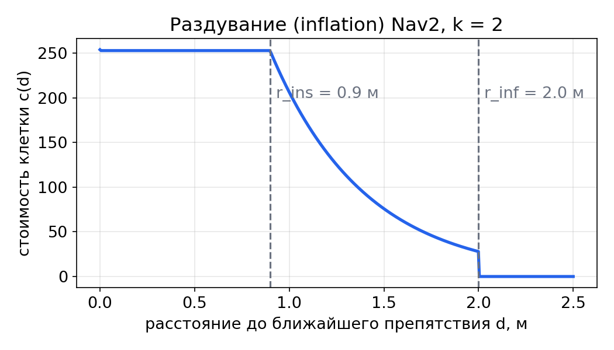
Простыми словами. Вокруг каждого препятствия рисуется «ореол»: чем ближе к препятствию, тем «дороже» клетка. Так машину можно считать точкой: если её центр попал в клетку 253, корпус уже касается препятствия.
Два колеса каждой оси заменяются одним («велосипед»). Состояние — положение задней оси $(x,y)$, курс $\psi$, скорость $v$, угол руля $\delta$:
$$\dot x=v\cos\psi,\qquad \dot y=v\sin\psi,\qquad \dot\psi=\frac{v\tan\delta}{L}.$$$L=2.648$ м (колёсная база Весты), $|\delta|\le\delta_{\max}=0.6$ рад. Мгновенный центр поворота лежит на продолжении задней оси на расстоянии $$R=\frac{L}{\tan\delta},\qquad R_{\min}=\frac{L}{\tan 0.6}\approx 3.9\ \text{м}.$$
Связь с командой ROS Twist: $\omega=\dot\psi=v\tan\delta/L$. Драйвер выполняет обратное преобразование $\delta=\arctan(\omega L/v)$. Нюанс: используется $\arctan$, а не $\operatorname{atan2}$, иначе при $v<0$ получается $\delta\approx\pm\pi$ и полный выворот руля — это был реальный найденный баг.
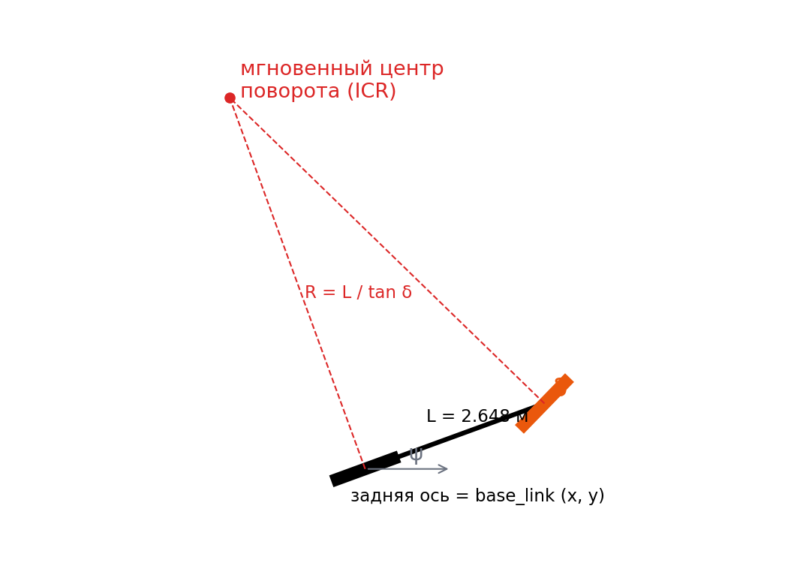
Простыми словами. Машина не может повернуть на месте: при максимально вывернутом руле она едет по окружности радиусом ~3.9 м. Эти три уравнения — всё, что нужно, чтобы предсказать, куда она приедет при заданных газе и руле.
Скорость и руль не отрабатывают команду мгновенно. Моделируем апериодическим звеном 1-го порядка с ограничением скорости изменения:
$$\dot v=\operatorname{sat}_{a_{\max}}\!\Big(\frac{v_{cmd}-v}{\tau_v}\Big),\qquad \dot\delta=\operatorname{sat}_{\dot\delta_{\max}}\!\Big(\frac{\delta_{cmd}-\delta}{\tau_\delta}\Big).$$Интегрирование — явный метод Эйлера с шагом $h=0.02$ с (5 подшагов на такт управления $\Delta t=0.1$ с). Номинал: $\tau_v=0.6$ с, $a_{\max}=2.5$ м/с², $\tau_\delta=0.1$ с, $\dot\delta_{\max}=1$ рад/с.
Параметры случайны в каждом эпизоде (серые кривые) — это доменная рандомизация. Для точной подстройки к Webots есть calibrate.py: подаёт ступенчатые команды, записывает $v(t),\omega(t)$ и подбирает $(\tau_v,a_{\max},\tau_\delta,\dot\delta_{\max})$ поиском по сетке минимизацией СКО.
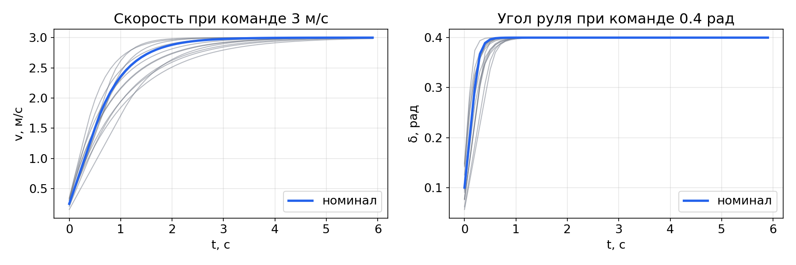
Простыми словами. Нажали газ — машина разгоняется не сразу, повернули руль — колёса доворачиваются за доли секунды. Сеть должна это учитывать, иначе будет «запаздывать» в поворотах.
Среда — MDP $\langle\mathcal S,\mathcal A,P,r,\gamma\rangle$: состояние $s_t$ (полная сцена), действие $a_t$, переход $s_{t+1}\sim P(\cdot\mid s_t,a_t)$, награда $r_t=r(s_t,a_t,s_{t+1})$. Агент видит лишь наблюдение $o_t=O(s_t)$ (локальную костмапу и путь) — это POMDP.
Ищется стохастическая политика $\pi_\theta(a\mid o)$, максимизирующая ожидаемый дисконтированный возврат:
$$J(\theta)=\mathbb E_{\tau\sim\pi_\theta}\Big[\sum_{t=0}^{T}\gamma^t r_t\Big],\qquad \gamma=0.99.$$Эффективный горизонт $1/(1-\gamma)=100$ тактов $=10$ с: сеть «думает» примерно на 10 секунд вперёд. Функции ценности: $V^\pi(s)=\mathbb E[\sum_k\gamma^k r_{t+k}\mid s_t=s]$, $Q^\pi(s,a)$, преимущество $A^\pi=Q^\pi-V^\pi$.
Простыми словами. Каждые 0.1 с сеть видит картинку вокруг и линию пути, выбирает газ и руль, получает «очки» (награду). Цель — набрать как можно больше очков за поездку. Очки за ближайшее будущее ценятся больше, чем за далёкое (множитель $\gamma$).
Эпизод — одна поездка по случайному пути от старта до цели (или до аварии / ухода с пути / застревания / тайм-аута).
| Компонента | Размер | Определение и нормировка |
|---|---|---|
| Патч костмапы | 64×64 | Квадрат 16×16 м в осях машины: $x\in[-4,12)$, $y\in[-8,8)$, шаг 0.25 м. Значение $c/254$, «неизвестно» = 0.5. |
| Точки пути | 2×20 | Точки глобального пути на дуговом расстоянии 1, 2, …, 20 м впереди проекции машины, в base_link, делённые на 20 м. |
| До цели | 1 | $\min(1,\ (L_{path}-s)/50)$. |
| Скорость, рысканье | 2 | $v/v_{\max}$, $\omega$ (рад/с) — из /odom. |
| Прошлая команда | 2 | $v_{t-1}/v_{\max}$, $\delta_{t-1}/\delta_{\max}$ — сеть знает, что «уже нажато». |
| Ошибки слежения | 2 | Боковое отклонение $\operatorname{clip}(e_y/5,\pm1)$, ошибка курса $e_\psi/\pi$. |
Эгоцентричность. Всё выражено относительно машины, глобальных координат сеть не видит. Поэтому она не может «запомнить трассу» — только научиться реагировать на локальную картину. Это ключ к обобщению на новые трассы.
Простыми словами. Сеть получает «картинку радара сверху» 64×64 и 47 чисел про путь и свою скорость. Всего 4143 числа 10 раз в секунду.
Центр клетки $(i,j)$ патча в base_link:
$$\mathbf b_{ij}=\big(x_{\min}+(i+\tfrac12)h_p,\ \ y_{\min}+(j+\tfrac12)h_p\big).$$Перевод в фрейм костмапы при позе $(x,y,\psi)$:
$$\mathbf w_{ij}=\begin{pmatrix}x\\y\end{pmatrix}+R(\psi)\,\mathbf b_{ij},\quad R(\psi)=\begin{pmatrix}\cos\psi&-\sin\psi\\ \sin\psi&\cos\psi\end{pmatrix}.$$Индекс клетки костмапы: $m=\lfloor(\mathbf w-\mathbf o)/h\rfloor$ ($\mathbf o$ — угол карты). Значение — $c_m/254$ (ближайший сосед).
Строка $i$ — вперёд, столбец $j$ — влево; патч поворачивается вместе с машиной.
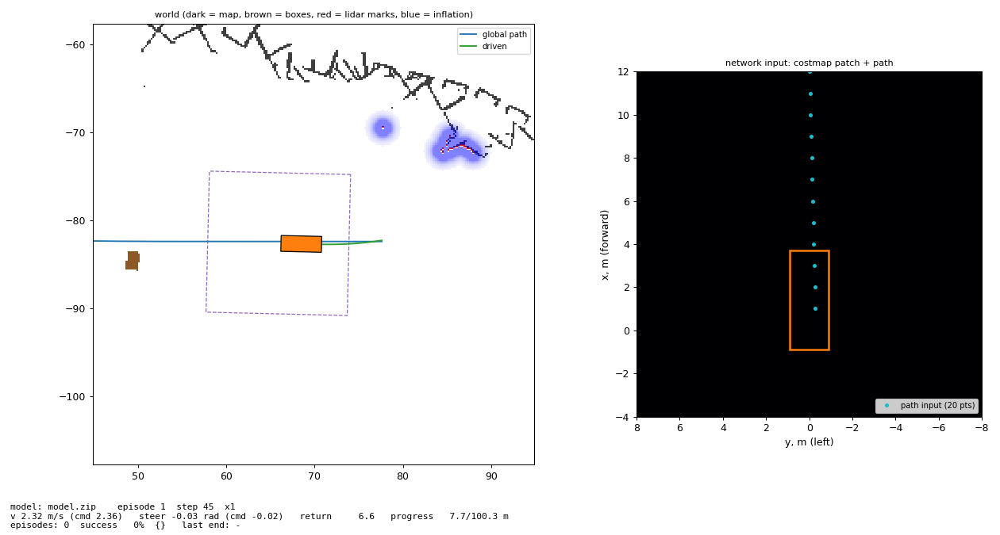
Просмотрщик: слева мир (тёмное — карта, коричневое — случайные препятствия, красное — отметки лидара, синее — раздувание, пунктир — область патча), справа — ровно то, что получает сеть.
Путь — ломаная $\{\mathbf p_k\}$ с накопленной длиной $s_k$. Для отрезка $[\mathbf a,\mathbf b]$ ближайшая к машине $\mathbf q$ точка:
$$t^*=\operatorname{clip}\!\Big(\frac{(\mathbf q-\mathbf a)\cdot(\mathbf b-\mathbf a)}{\|\mathbf b-\mathbf a\|^2},0,1\Big),\quad \mathbf q^*=\mathbf a+t^*(\mathbf b-\mathbf a),$$ $$s=s_k+t^*\|\mathbf b-\mathbf a\|.$$Минимум $\|\mathbf q-\mathbf q^*\|^2$ ищется только по отрезкам от последнего найденного индекса до $s_{idx}+10$ м — окно поиска.
Зачем окно. На трассе путь может проходить рядом сам с собой (параллельные участки, шпильки). Без окна машина «перепрыгнула» бы на чужой участок, оказавшийся ближе. Окно заставляет двигаться по пути вперёд монотонно.
Простыми словами. Находим «где мы на линии пути» (сколько метров проехали) и насколько сбились вбок и по курсу.
Сеть выдаёт $a=(a_v,a_\delta)\in[-1,1]^2$. Отображение в команду:
$$\delta_{cmd}=\delta_{\max}\,a_\delta,\qquad v_{cmd}=v_{lim}(s)\cdot\frac{a_v+1}{2},$$где $v_{lim}(s)$ — лимит скорости по пути (следующий слайд). Затем ограничение скорости изменения за такт:
$$|v_{cmd}-v_{t-1}|\le0.3\ \text{м/с},\qquad |\delta_{cmd}-\delta_{t-1}|\le0.1\ \text{рад},$$и перевод в Twist: $\ \texttt{linear.x}=v_{cmd},\ \ \texttt{angular.z}=v_{cmd}\tan\delta_{cmd}/L$.
Только вперёд ($v\ge0$): задний ход не нужен на трассе и усложняет задачу.
Эволюция решения. Изначально $v_{cmd}=v_{\max}(a_v+1)/2$. Сеть не научилась тормозить в поворотах из-за насыщения действия (раздел 8). Итог: газ — доля допустимой скорости; $a_v=1$ означает «ехать ровно на лимите», превысить его невозможно по построению.
Простыми словами. Руль — от −0.6 до 0.6 рад. Газ — «сколько процентов от безопасной скорости для этого места пути». Безопасную скорость считает не сеть, а формула.
Боковое ускорение в повороте кривизны $\kappa$: $a_{lat}=v^2\kappa\le a_{lat}^{\max}=2$ м/с², откуда
$$v_{curve}(\kappa)=\sqrt{a_{lat}^{\max}/|\kappa|}.$$Чтобы успеть затормозить с замедлением $a_{dec}=2$ м/с² до поворота на расстоянии $d$: $v\le\sqrt{v_{curve}^2+2a_{dec}d}$ (равнозамедленное движение). Аналогично к финишу со скоростью $v_{goal}=1$ м/с. Итог:
$$\begin{aligned}v_{lim}(s)=\min\Big\{&v_{\max},\ \sqrt{v_{goal}^2+2a_{dec}(L-s)},\\ &\min_{k}\sqrt{v_{curve}(\kappa_k)^2+2a_{dec}d_k}\ \Big\}\end{aligned}$$$\kappa_k=|\operatorname{wrap}(\theta_{k+1}-\theta_k)|/\Delta$ по точкам пути с шагом $\Delta=1$ м на 12 м вперёд, $d_k=(k-1)\Delta$.
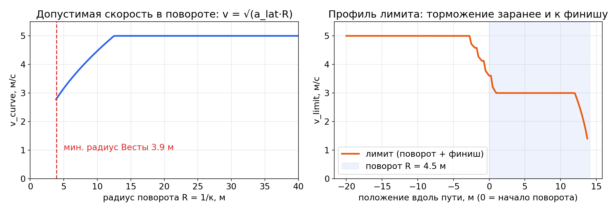
Простыми словами. Перед крутым поворотом (R=4.5 м) лимит плавно падает с 5 до 3 м/с, а у финиша — до 1 м/с. Это «правило из учебника вождения», вычисляемое по форме пути. Одна и та же функция работает в Python (обучение) и C++ (плагин); совпадение проверено до $10^{-9}$.
| Член | Смысл |
|---|---|
| $\Delta s$ | метры, пройденные вдоль пути за такт (основной стимул) |
| $e_y,e_\psi$ | штраф за уход с пути и неверный курс |
| $\bar c_{fp}$ | средняя стоимость костмапы под 240 точками корпуса / 254 |
| $\Delta v,\Delta\delta$ | плавность: штраф за рывки |
| $(v-v_{lim})^+$ | превышение лимита скорости |
| $-0.01$ | цена времени: стимул не стоять |
| Терминальное событие | $r^{term}$ |
|---|---|
| Столкновение (корпус ∩ препятствие) | −50 |
| Цель: < 1.5 м до конца пути | +50 |
| Уход с пути $|e_y|>5$ м | −20 |
| Застревание: < 1 м прогресса за 10 с | −20 |
| Тайм-аут $(L/1.5+30)$ с | 0 (усечение) |
Простыми словами. +1 очко за каждый метр по маршруту, мелкие штрафы за неаккуратность, большой штраф за аварию и бонус за финиш.
truncated).reward.py), но в Webots «столкновение» — это летальная клетка локальной костмапы под корпусом (истинной геометрии там нет).Простыми словами. Если хвалить только за финиш, ученик долго будет «тыкаться наугад». Мы хвалим за каждый правильный метр, а за опасное и рваное поведение — немного ругаем.
Сеть выдаёт среднее $\mu_\theta(o)$, разброс — обучаемые параметры $\log\sigma$ (не зависят от наблюдения):
$$\pi_\theta(a\mid o)=\mathcal N\big(a;\ \mu_\theta(o),\ \operatorname{diag}\sigma^2\big),\qquad \mu_\theta(o)=\tanh\big(W h_\theta(o)+b\big).$$ $$\log\pi_\theta(a\mid o)=-\sum_{i=1}^{2}\Big[\frac{(a_i-\mu_i)^2}{2\sigma_i^2}+\log\sigma_i+\tfrac12\log2\pi\Big],\qquad \mathcal H=\sum_i\tfrac12\log(2\pi e\sigma_i^2).$$Простыми словами. Во время обучения сеть специально «немного дёргается» случайно вокруг своего лучшего решения — так она пробует новое и находит, что лучше. Величина этой случайности $\sigma$ тоже учится. На реальной машине случайности нет.
| Блок | Слои | Выход | Параметры |
|---|---|---|---|
| CNN по патчу | Conv 5×5/2 (16) → ReLU → Conv 3×3/2 (32) → ReLU → Conv 3×3/2 (32) → ReLU | 32×6×6 = 1152 | 14 304 |
| Голова CNN | Linear 1152→256, ReLU | 256 | 295 168 |
| MLP по вектору | Linear 47→128, ReLU, 128→128, ReLU | 128 | 22 656 |
| Общий экстрактор признаков (конкатенация) | 384 | 332 128 | |
| Актёр $\pi$ | 384→256→256 (ReLU) → Linear→2, tanh | $\mu\in(-1,1)^2$ | 164 352 + 514 |
| Критик $V$ | 384→256→256 (ReLU) → Linear→1 | $V(o)$ | 164 352 + 257 |
| $\log\sigma$ | свободные параметры | 2 | 2 |
Размер карт признаков CNN: 64 → 30 → 14 → 6 (свёртки без паддинга со страйдом 2).
Почему так. Свёртки извлекают пространственные паттерны (стены, проходы, коридоры), инвариантные к сдвигу. Вектор пути и состояния обрабатывает MLP. Экстрактор общий для актёра и критика (экономия вычислений), головы раздельные.
Простыми словами. Одна часть сети «смотрит на картинку», другая «читает числа», дальше две небольшие «головы»: одна решает, что делать, вторая оценивает, насколько хороша ситуация.
Инференс на CPU: доли миллисекунды — с запасом для 10 Гц.
Теорема о градиенте стратегии:
$$\nabla_\theta J=\mathbb E\big[\nabla_\theta\log\pi_\theta(a_t\mid o_t)\,\hat A_t\big].$$Наивный шаг по нему нестабилен. PPO максимизирует суррогат с отсечением отношения вероятностей $r_t(\theta)=\pi_\theta(a_t\mid o_t)/\pi_{\theta_{old}}(a_t\mid o_t)$:
$$L^{CLIP}(\theta)=\hat{\mathbb E}_t\Big[\min\big(r_t\hat A_t,\ \operatorname{clip}(r_t,1-\varepsilon,1+\varepsilon)\hat A_t\big)\Big],\ \ \varepsilon=0.2.$$Полная функция потерь (минимизируется):
$$\mathcal L=-L^{CLIP}+c_v\,\hat{\mathbb E}\big[(V_\theta(o_t)-\hat R_t)^2\big]-c_e\,\mathcal H[\pi_\theta],\quad c_v=0.5,\ c_e=0.003.$$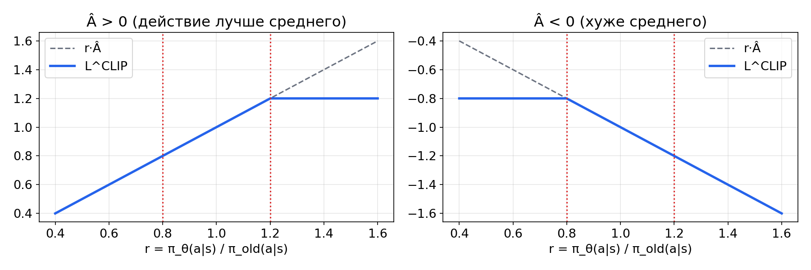
Простыми словами. Если действие оказалось лучше ожидаемого — делаем его чуть вероятнее, хуже — чуть менее вероятным. «Чуть» ограничено (±20% за обновление), чтобы одно неудачное обновление не сломало всё выученное.
Generalized Advantage Estimation:
$$\delta_t=r_t+\gamma V(o_{t+1})(1-d_t)-V(o_t),\qquad \hat A_t=\sum_{l\ge0}(\gamma\lambda)^l\delta_{t+l},$$ $$\hat R_t=\hat A_t+V(o_t).$$$\lambda$ задаёт компромисс смещение/дисперсия: $\lambda=0$ — одношаговая TD-оценка (смещённая), $\lambda=1$ — Монте-Карло (шумная). Используется $\lambda=0.95$.
Цикл: 8 параллельных сред × 256 шагов = 2048 переходов → 5 эпох градиентного спуска (Adam) по этому буферу → новый сбор.
| Гиперпараметр | Значение |
|---|---|
| $\gamma$ / $\lambda$ | 0.99 / 0.95 |
| $\varepsilon$ (clip) | 0.2 |
| learning rate | $3\cdot10^{-4}$ |
| n_steps × n_envs | 256 × 8 |
| batch / epochs | 2048 / 5 |
| $c_v$ / $c_e$ | 0.5 / 0.003 |
| max grad norm | 0.5 |
| $\sigma_0$ | $e^{-0.5}\approx0.61$ |
Простыми словами. Критик предсказывает «сколько очков ещё наберём». Преимущество — насколько реальный результат оказался лучше этого прогноза.
Простыми словами. Сначала сеть «подсматривает» за простым автопилотом и учится просто ехать по линии. С этого уровня RL стартует гораздо быстрее, чем со случайного поведения. Объезжать препятствия сеть учится уже сама, через награду.
PPO на задачах такого класса требует $10^7$–$5\cdot10^7$ шагов. При $\Delta t=0.1$ с это
$$3\cdot10^7\times0.1\ \text{с}\approx 830\ \text{ч}\ \text{езды}.$$Ключевой аргумент: сеть не видит ни лидара, ни 3D-мира — только костмапу, путь и скорость. Значит, симулятору достаточно правдоподобно порождать эти величины; физика колёс и рендеринг не нужны.
| Вариант | Вердикт |
|---|---|
| Isaac Lab | Быстро на GPU, но тяжело и избыточно для костмап |
| CARLA | Дороги + камеры, очень тяжёлый |
| MuJoCo/Brax | Хорошая физика, костмапу всё равно писать самим |
| Gazebo | Так же медленен, как Webots |
| Свой 2D | Выбран; Webots — для дообучения и проверки |
procedural — новый сгенерированный мир, иначе карта robocross и путь из библиотеки (400 путей).obstacle_max_range) — матрица 720×149 индексов клеток, обрабатывается векторно (numpy).argmax по булевой матрице попаданий). Она помечается как «увиденная»; всё за ней остаётся невидимым (окклюзия).cv2.distanceTransform (DIST_MASK_PRECISE, точный результат) ускорила его в 5 раз, шаг среды — с ~340 до ~520 шагов/с.Шум восприятия:
Простыми словами. Симулятор «видит» так же, как настоящий лидар: только ближайшее в каждом направлении, иногда что-то пропускает, иногда видит то, чего нет.
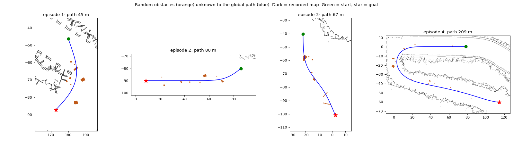
Оранжевое — случайные препятствия, синее — глобальный путь (о препятствиях не знает), тёмное — карта.
Простыми словами. В реальности планировщик строит путь по старой карте и не знает о новых объектах. Мы тренируем ровно этот случай: путь проложен «сквозь» коробку, объехать её должна сеть.
Путь (шаг $\Delta s=0.5$ м) — клотоидоподобный: кривизна дрейфует к случайной цели,
$$\kappa_{n+1}=\kappa_n+\operatorname{clip}(\kappa^*-\kappa_n,\pm\Delta\kappa),\quad \psi_{n+1}=\psi_n+\kappa_n\Delta s,$$$\kappa^*$ перевыбирается с вероятностью 0.03: 0 (прямая) с вер. 0.35, иначе $U(-\kappa_{\max},\kappa_{\max})$, $\kappa_{\max}=1/4.5$; $\Delta\kappa\sim U(0.004,0.015)$. Нет петель: для точек с дуговым расстоянием $\ge10$ м требуется $\|p_i-p_j\|\ge\min(0.4\cdot\text{дуга},9\ \text{м})$.
Барьеры: 2 стороны (60%), 1 (20%), нет (20%); на расстоянии $d(s)=\operatorname{clip}(d_0+n(s),3,10)$ м, $n$ — гладкий шум; стиль — пунктир с разрывами или ряд объектов (шины, коробки, X). Плюс фоновый «мусор».
Клиренс: всё статическое ≥ 2 м от пути, путь продлён на 5 м за финиш (нос машины на 3.7 м впереди задней оси). Проверено: pure pursuit доезжает на 100/100 трассах без случайных препятствий.
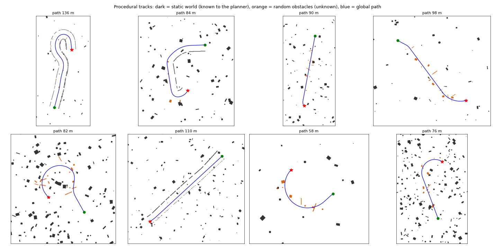
Простыми словами. Чтобы сеть не «привыкла» к одной трассе, половину поездок она делает по свежим, каждый раз новым трассам.
| Величина | Распределение (на эпизод) |
|---|---|
| Постоянная скорости $\tau_v$ | $U(0.3,1.2)$ с |
| Макс. ускорение $a_{\max}$ | $U(1.5,3.5)$ м/с² |
| Постоянная руля $\tau_\delta$ | $U(0.05,0.25)$ с |
| Скорость руля $\dot\delta_{\max}$ | $U(0.5,1.5)$ рад/с |
| Потеря лучей лидара | $U(0,0.15)$ |
| «Призраки» | в 30% эпизодов, 1–5 шт. |
| Шум $v$, $\omega$ | $\mathcal N(0,0.05^2)$, $\mathcal N(0,0.02^2)$ на каждом шаге |
| Поза старта | $\pm0.3$ м вбок, $\pm0.2$ рад |
| Мир | robocross / процедурный 50/50 |
| Препятствий нет | 15% эпизодов |
Идея (Tobin et al., 2017): если политика работает на всём семействе симуляторов, реальный мир с высокой вероятностью окажется «ещё одним членом семейства». Сеть не может опереться на точное значение параметра, которого не наблюдает.
Простыми словами. Тренируемся на разных «машинах» и «датчиках», чтобы настоящие (или машина в Webots) не оказались сюрпризом.
Уровень сложности $\ell\in[0,1]$:
$$N_{\max}=\operatorname{round}(3+12\ell),\qquad p_{on}=0.1+0.25\ell,$$где $N_{\max}$ — макс. число препятствий, $p_{on}$ — доля «прямо на пути». Правило подъёма:
$$\ell\leftarrow\ell+0.1,\ \text{если}\ \overline{\text{success}}_{100}\ge0.6\ \text{и прошло}\ \ge3\cdot10^5\ \text{шагов}.$$Уровень пишется в curriculum.json и восстанавливается при --resume; передаётся в процессы-симуляторы через env_method.
Простыми словами. Как в школе: сначала простые задачи, сложнее — только когда текущие решаются в 60% случаев.
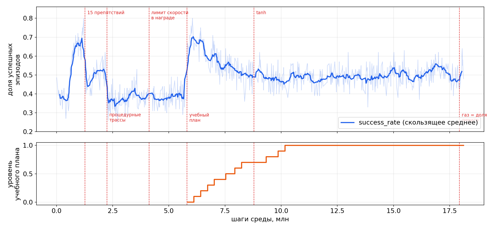
После включения плана (5.8 млн) успех вырос 0.38 → 0.7 и держался ~0.5 при подъёме сложности до максимума к 10.2 млн шагов.
--n-envs (по умолчанию ≤ 8), OMP/MKL/OPENBLAS_NUM_THREADS=1 в воркерах, torch.set_num_threads(4), приоритет nice 10, сторож памяти --max-ram-gb (суммарный PSS дерева процессов из /proc; при превышении — сохранить модель и остановиться).curriculum/level и actions/throttle_clipped (контроль насыщения).PSS vs RSS. RSS считает разделяемые библиотеки (libtorch) в каждом процессе; PSS делит их между процессами — это реальная занятая память (~200 МБ на воркер).
Простыми словами. Запускаем 8 «тренажёров» одновременно, но вежливо: каждый на одном ядре и с пониженным приоритетом.
vesta_neural_controller::NeuralControllerРеализует интерфейс nav2_core::Controller (Humble): configure / activate / deactivate / cleanup / setPlan / computeVelocityCommands / setSpeedLimit. Загружается controller_server через pluginlib.
pluginlib::ClassLoader, параметры FollowPath.fallback.*) → $(v,\delta)_{RPP}$, $\delta=\arctan(\omega L/v)$.buildVec + buildPatch (сырые Costmap2D::getCharMap()) → ONNX Runtime → $(a_v,a_\delta)$ → $v=v_{lim}(s)\frac{a_v+1}{2}$.setSpeedLimit).neural_controller/source и маркеров траекторий.Надёжность. Нет модели / нет onnxruntime / ошибка инференса → плагин работает только на RPP (с той же проверкой прогоном). Сборка без onnxruntime возможна (stub).
Простыми словами. Плагин — это «картридж», который Nav2 вставляет вместо стандартного контроллера. Снаружи для Nav2 ничего не меняется.
Для команды $u=(v,\delta)$ интегрируется модель (велосипед + инерционные звенья, номинальные параметры) на $T=2$ с с шагом 0.1 с от текущей позы, скорости и последнего руля. На каждом шаге — стоимость контура корпуса FootprintCollisionChecker:
Правило выбора ($m=0.5$ м — допуск в пользу сети):
$$u^*=\begin{cases}u_{NN},&\text{безопасна и }\ \text{score}_{NN}\ge\text{score}_{RPP}-m\\ u_{RPP},&\text{иначе, если безопасна}\\ \text{STOP }(v=0),&\text{иначе}\end{cases}$$Простыми словами. Перед тем как «нажать педали», плагин в уме проигрывает 2 секунды для решения сети и для решения классического алгоритма. Если сеть ведёт в стену — берём классику, если и она — тормозим.
Доля NN в /neural_controller/source — прямой аналог метрики Яндекса «нейросеть управляет 80% пути».
obs.py — эталон, observation.cpp — построчный перенос с теми же порядками операций (одинаковые IEEE-округления).% (знак делителя) в $\operatorname{wrap}$; searchsorted(side='right') ↔ upper_bound; деление float32 для патча; $\lfloor\cdot\rfloor$ для индекса клетки.make_obs_fixture пишет 9 случайных случаев (костмапы с 255/254, пути с отрезком нулевой длины, одноточечный путь, ненулевой стартовый индекс) с входами в полной точности (%.17g).model.predict(deterministic=True).Пример найденной проблемы: при сверке лимита скорости расхождение ~$10^{-7}$ возникло не из-за кода, а из-за того, что координаты пути в фикстуре записывались с 9 значащими цифрами. После перехода на 17 — совпадение $<10^{-9}$.
Простыми словами. Один и тот же «расчёт входа» написан дважды (Python и C++), и автотест проверяет, что они дают одинаковые числа.
Настоящий nav2.launch.py (map_server, planner_server, controller_server с плагином) + фейковая машина (велосипедная модель, публикует /odom и TF) + фейковый лидар, видящий коробку 1×2 м на пути. Цель FollowPath: прямая 40 м.
| Сценарий | Результат | Источник команд | Вывод |
|---|---|---|---|
| A. Нет модели, нет препятствия | Цель достигнута (SUCCEEDED) | RPP 100% | Вложенный RPP работает |
| B. Нет модели, коробка на пути | Остановка за 2.4 м до коробки | RPP → STOP | Арбитр предотвращает столкновение |
| C. Почти необученная сеть, коробка | Остановка за 0.4 м | NN → STOP | Даже «плохая» сеть не врезается |
| D. Сеть, нет препятствия | Цель достигнута | NN 100% | Инференс ONNX в C++ работает |
Простыми словами. Проверили «картридж» в настоящем Nav2 с игрушечной машиной: без сети он ездит на классике, с плохой сетью — тормозит перед препятствием, с нормальной — едет сам.
| Шаги, млн | Изменение | Эффект |
|---|---|---|
| 0 – 1.27 | robocross, ≤ 6 коробок, BC-разминка | успех до ~0.8 |
| 1.27 / 2.25 | до 15 препятствий / процедурные трассы 50% | задача резко сложнее: ~0.5 → ~0.38 |
| 4.12 | штраф за превышение лимита, энтропия | без видимого эффекта (см. насыщение) |
| 5.81 / 8.79 / 17.93 | учебный план / tanh на среднем / газ как доля лимита | 0.38 → 0.7, далее ~0.5 при максимальной сложности |
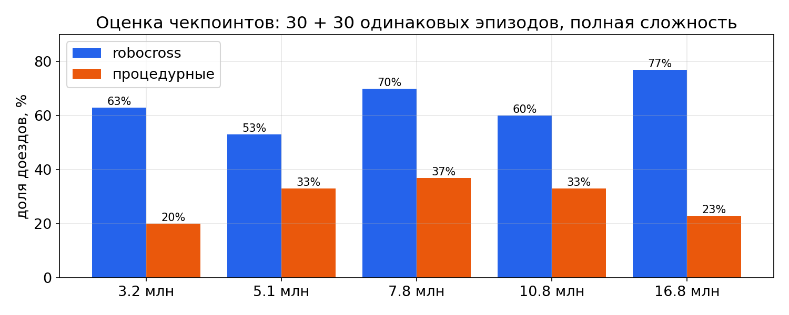
Детерминированная политика, полная сложность (до 15 препятствий), одни и те же 30 эпизодов robocross и 30 процедурных (seed 123). Доверительный интервал ±9 п.п. (биномиальный, $n=30$).
| Чекпоинт | Скорость в поворотах (лимит) |
|---|---|
| 5.1 млн | 4.80 (3.72) м/с |
| 7.8 млн | 4.80 (3.60) |
| 10.8 млн (tanh) | 3.11 (3.64) |
| 16.8 млн | 4.90 (3.60) |
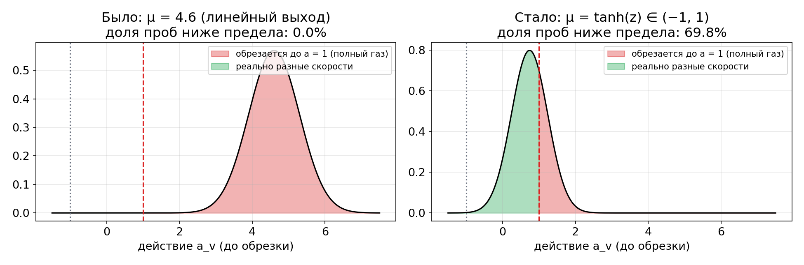
Среднее линейного выхода ушло к $\mu_v\approx4.6$ при $\sigma\approx0.7$. Среда обрезает действие: $\tilde a=\operatorname{clip}(a,-1,1)$. Доля проб ниже предела $\Phi\big((1-\mu)/\sigma\big)\approx\Phi(-5.1)\approx10^{-7}$: все пробы дают полный газ, переход не зависит от $a_v$, преимущество не несёт информации о скорости → градиент по скорости ≈ 0. Энтропийный бонус при этом бесплатно раздувал $\sigma_v$ (0.55 → 0.72).
Шаг 1: $\mu=\tanh(z)$. Среднее ограничено, пробы снова по обе стороны предела (доля обрезанных — 0.5). Но сеть «разогнала» $z$ до 6.1: $\partial\mu/\partial z=1-\tanh^2z\approx2.5\cdot10^{-5}$ — второе насыщение.
Шаг 2: газ = доля $v_{lim}$. Теперь $a_v=1$ означает «на лимите», и насыщение безвредно: превысить безопасную скорость нельзя по построению.
Простыми словами. Сеть «вдавила педаль в пол» настолько, что даже случайные пробы не могли показать, что медленнее бывает лучше. Решение — сделать «пол» безопасной скоростью.
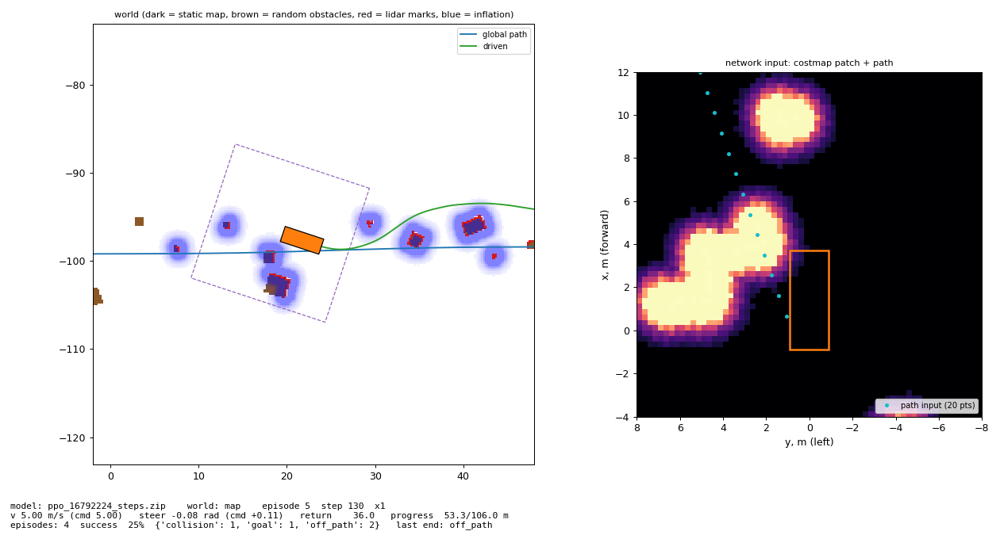
robocross, 16.8 млн: объезд группы препятствий справа и возврат к пути.
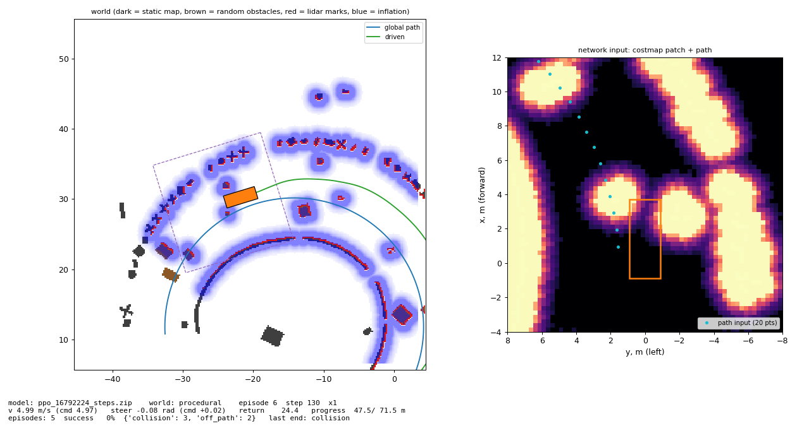
Процедурная кольцевая трасса: вылет через разрыв барьера на 5 м/с — типичная ошибка до введения газа как доли лимита.
Как пользоваться. ros2 run vesta_rl viewer --run runs/sim — отдельный процесс со своей копией симулятора берёт последний чекпоинт и показывает езду (пробел — пауза, n — следующий эпизод, +/− — скорость). Флаг --snapshot сохраняет кадр в PNG.
| Симптом | Причина | Исправление |
|---|---|---|
| Машина поворачивает при движении назад | $\operatorname{atan2}(-\omega L, v)$ при $v<0$ даёт $\approx\pm\pi$ → полный выворот | $\arctan(-\omega L/v)$ |
RViz не показывает /map | map_server публикует один раз с QoS transient_local, подписчик volatile | Durability = Transient Local |
| ПК зависает при обучении | 30 процессов × потоки BLAS, ~10 ГБ | лимиты потоков, nice, сторож RAM |
| colcon падает после pip | новый setuptools + старый packaging Ubuntu 22.04 | setuptools==58.2.0 |
| Аварии эксперта на процедурных трассах | петли пути; барьер в 2 м на внешней стороне шпильки; препятствие за финишем | критерий самосближения, барьеры ≥ 3 м, клиренс +5 м за финиш |
| Симулятор замедлился | пересчёт EDT почти на каждом шаге | OpenCV вместо scipy (×5) |
| Нет торможения в поворотах | насыщение действия (слайд 38) | tanh → газ как доля лимита |
| Расхождение C++/Python $10^{-7}$ | 9 значащих цифр в фикстуре | %.17g |
/odom и телепорт там пока не проверены.calibrate.py в Webots → центр рандомизации и параметры прогона арбитра.# симулятор и навигация ros2 launch webots_ros2_suv robot.launch.py ros2 launch webots_ros2_suv nav2.launch.py # запись карты (pointcloud→scan, slam_toolbox, map_saver) ros2 launch webots_ros2_suv mapping.launch.py # библиотека путей ros2 run vesta_rl make_paths --map <map.yaml> --out paths.npz # обучение в 2D (GPU, ограничение ОЗУ) ros2 run vesta_rl train --map <map.yaml> --paths paths.npz \ --out runs/sim --device cuda --max-ram-gb 12
# продолжить с сохранения ros2 run vesta_rl train ... --resume runs/sim/model.zip # смотреть, как едет текущая модель ros2 run vesta_rl viewer --run runs/sim tensorboard --logdir runs/sim/tb # экспорт и запуск в Nav2 ros2 run vesta_rl export_onnx --model runs/sim/model.zip \ --out src/vesta_neural_controller/models/policy.onnx colcon build --packages-select vesta_neural_controller ros2 launch webots_ros2_suv nav2.launch.py # доля управления нейросетью ros2 topic echo /neural_controller/source
Агент / политика $\pi$ — правило выбора действия по наблюдению; у нас — нейросеть.
Среда — то, с чем агент взаимодействует (симулятор), возвращает наблюдение и награду.
Эпизод — одна попытка от старта до завершения.
Награда $r$ — число-оценка шага; цель — максимизировать их дисконтированную сумму.
Ценность $V(s)$ — ожидаемая будущая награда из состояния $s$.
Преимущество $A$ — насколько действие лучше «среднего» в этом состоянии.
Актёр / критик — части сети: выбирает действие / оценивает ценность.
PPO — алгоритм обучения политики с ограничением величины обновления.
GAE — способ оценить преимущество, смешивая короткие и длинные прогнозы.
Энтропия — мера «случайности» политики; бонус за неё поощряет исследование.
BC (клонирование поведения) — обучение копированием действий эксперта.
Учебный план — постепенное усложнение задач по мере успеха.
Доменная рандомизация — случайные параметры симулятора ради устойчивости.
Sim-to-real — перенос из симуляции в реальность (или в более точный симулятор).
Насыщение — выход за предел, где изменение входа почти не меняет результат.
Чекпоинт — сохранённое состояние сети на определённом шаге.
ROS 2 узел / топик — программа / именованный канал сообщений между ними.
TF — дерево преобразований между системами координат (map, odom, base_link…).
Одометрия — оценка собственного движения (здесь — по GPS и IMU).
SLAM — одновременное построение карты и локализация (slam_toolbox).
Сетка занятости / костмапа — карта клеток со «стоимостью» проезда.
Inflation — «ореол» стоимости вокруг препятствий с учётом размеров машины.
Глобальный планировщик — строит путь по всей карте (SmacPlannerHybrid).
Контроллер (локальный) — по пути и окружению выдаёт скорость и руль.
Pure Pursuit / RPP — классический контроллер: «целься в точку впереди на пути».
Footprint — контур корпуса машины для проверки столкновений.
Ackermann / велосипедная модель — кинематика машины с поворотными передними колёсами.
cmd_vel / Twist — сообщение «линейная и угловая скорость».
Лидар — лазерный дальномер, дающий облако точек вокруг.
QoS (transient local) — политика доставки: «последнее сообщение сохраняется для новых подписчиков».
Плагин / pluginlib — механизм подгрузки реализаций интерфейса по имени.
ONNX — открытый формат нейросетей для запуска вне Python.
Построен полный цикл: симулятор → обучение PPO → экспорт ONNX → плагин Nav2 с арбитром по схеме ровера Яндекса. Сеть обучена на ~18 млн шагов с процедурными трассами, случайными препятствиями, рандомизацией и учебным планом; на трассе robocross доезжает до 77% эпизодов при максимальной сложности, безопасность обеспечивается арбитром независимо от качества сети. Главный урок — архитектурные ограничения (лимит скорости в действии) надёжнее, чем штрафы в награде.